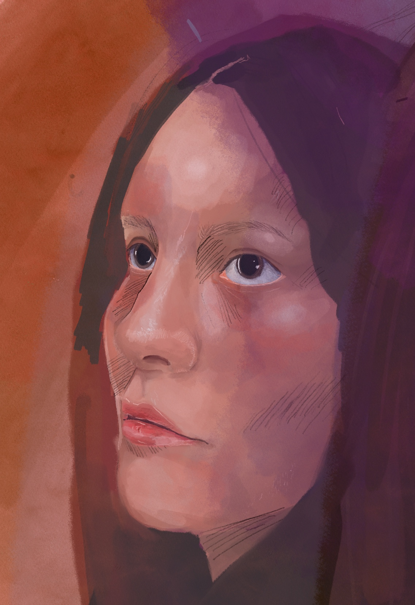
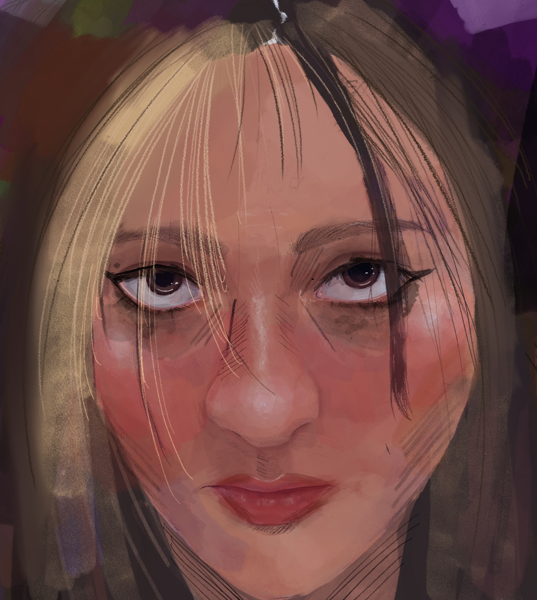
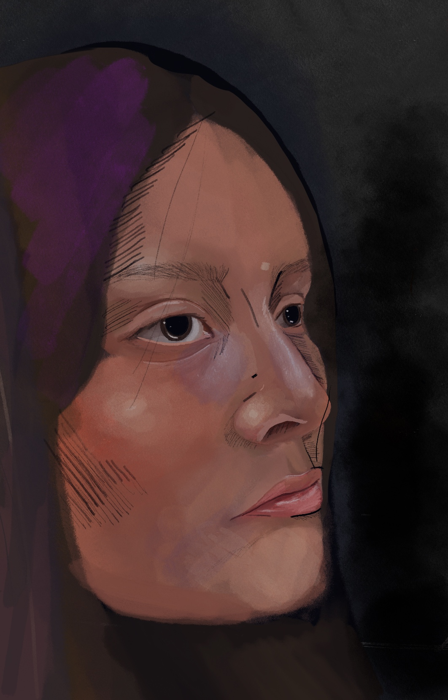

2D Artwork
Vacant
  I have always wanted to create an artwork that depicts the intense emotions, and lack of emotion I feel when overwhelmed. I find it challenging to find a way to put these emotions into words, and over time I realized that the easiest way for me to get the message across to other people is through artwork. People can get a general understanding of the message I am trying to get across, but the viewer can also interpret it in a way that relates to them best, which I think is just as important. For this piece, I dug deep into my past, depicting two points in my life when I was most vulnerable and constantly overwhelmed, unsure of how to manage my emotions, and the third point being more recent, feeling more apathetic, a vacant feeling, tired, and unsure where I find myself going. I have been managing better, medicating, and focusing on myself, however, deep down I still find myself struggling because I now lack the strong emotions I once had which in a way provided me with drive and willpower. The three images are meant to show a slow progression of the impact of the intense emotions, and how over time it progressively gets worse, and leads to apathy. The second drawing, in particular, is my favorite one because it is based on a point in my life when everything felt so intense and I was desperate to receive validation in order to mask all the problems and ignore how awful I was feeling deep down. I was changing everything about myself, my hair, my makeup, my body, and nothing was helping because, at the end of the day, I still felt a strong sadness and a combination of other negative emotions. I felt that having this be a digital piece would make it stronger as I see this being displayed in a dark room, with these artworks displayed on a screen, to bring focus in on them as the only source of light and focus in the room. It is also more accessible for viewers to see an artwork digitally online as well, which I feel is the best way to distribute this artwork.